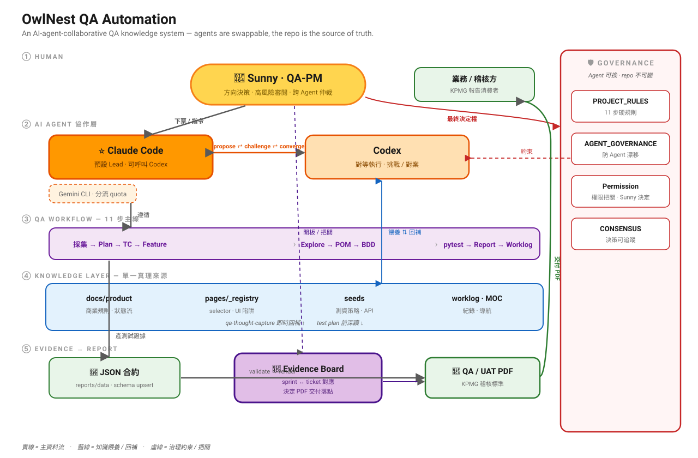

幕後系統架構
OwlNest QA Automation ｜ AI-Native QA Operating System
苦命兔的故事不是憑空想像。牠每天工作的地方，是一個叫 owlnest-playwright 的真實 repo——一套用「系統角色 + 資訊流」運作的 AI-Native QA 系統。 這頁把幕後架構攤開，讓你看懂漫畫裡那些測試報告、跨 Agent 辯論、秘密小本本與家規， 在真實系統裡分別對應到哪個角色與哪一條資訊流。

核心原則：Agent 可換，repo 才是真理來源。Chat 與記憶都不是。
八種角色，一條資訊流
-
Human
Sunny · QA-PM
下票、決策方向、高風險票審閱定稿，也是跨 Agent 討論的仲裁者與最終把關人。
-
Agent
Claude Code · Codex
對等的 AI 執行者。Claude Code 為預設 Lead、可呼叫 Codex；兩者提案、挑戰、收斂出共識。（對應第 04 / 11 話）
-
Knowledge
真理來源層
docs/product 商業規則、pages/_registry 的 UI 陷阱、seeds 測資、worklog 紀錄——苦命兔的「秘密小本本」。（第 03 / 12 話）
-
Workflow
11 步主線
採集 → TestPlan → TC → Feature → Explore → POM → BDD → pytest → Report → Worklog，固定交付物、可變測試深度。（第 05 話）
-
Test Execution
pytest · Playwright
跑 BDD scenario、走真實 API 造測資、selector 封裝進 Page Object，自動收集 step 截圖。（第 01 / 06 話）
-
Evidence
Evidence Board
JSON 合約 + step 截圖匯整成證據；Evidence Board 持久化 sprint↔ticket 對應，決定報告交付落點。
-
Report
QA / UAT PDF
統一 renderer 讀合約 JSON，產出符合 KPMG 稽核標準的 PDF，整包交付業務／稽核方。
-
Governance
治理層
PROJECT_RULES 硬規則、AGENT_GOVERNANCE 防漂移、Permission 把關、CONSENSUS 決策紀錄——苦命兔的「家規」。（第 07 / 13 / 14 話）